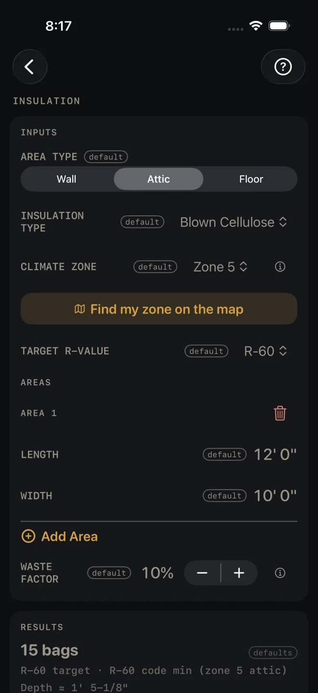

Insulation
What it's for
Buying insulation for an attic, a wall or a floor, and checking the R-value you picked against the energy code minimum for your climate zone. You walk away with bags to buy (or board feet of spray foam), the depth to install, a pass or fail against the code table, and a section drawing. The check is against the 2021 IRC table the screen names. Your town may have amended it.
Step by step
The example is the screen as it opens: a 12' by 10' attic in climate zone 5, blown cellulose to R-60.

1 2 3 4 5- AREA TYPE — Wall, Attic or Floor. The code minimum is different for each. Leave it at Attic.
- INSULATION TYPE — Batt/Roll, Blown Cellulose, Blown Fiberglass, Spray Foam (Open-Cell) or Spray Foam (Closed-Cell). Leave it at Blown Cellulose.
- CLIMATE ZONE — your energy-code zone, 1 for the hottest through 8 for the coldest. It sets the code minimum. Zone 5 here.
- If you do not know your zone, tap Find my zone on the map. See below.
- TARGET R-VALUE — what you intend to install. Pick it from the menu. R-60 here.
- Under AREAS, measure each rectangle you are insulating: LENGTH (12' 0") and WIDTH (10' 0"). For an attic or a floor that is the plan size. For a wall, use the wall's length and its height.
- Tap Add Area for each further rectangle. The trash can removes one.
- WASTE FACTOR — the extra you buy, in steps of 5%. It opens at 10%.
- Read RESULTS: 15 bags, R-60 target · R-60 code min (zone 5 attic), Depth ≈ 1' 5-1/8", 132 sq ft incl. waste.
- Read the check under the facts. Green here: Meets R-60 code min — IRC N1102.1.3, zone 5 attic.
- Tap BASIS & WHAT WAS ASSUMED for where the minimum comes from.
- Check the section drawing.
- Read MATERIALS, then save or share the job.
![Insulation scrolled past the headline, which now reads 15 bags in the strip under the title with the code check beside it. The bottom of the results card shows 132 sq ft incl. waste, a green line Meets R-60 code min — IRC N1102.1.3, zone 5 attic, and the BASIS & WHAT WAS ASSUMED row. Below is the attic section drawing with about 17-1/8" required depth, then MATERIALS: Blown Cellulose, assumes about 9.2 sq ft/bag at R-60, check the bag chart, 15 bags, and a dimmed SHARE PDF with a list icon at its right end, beside a lit SAVE.](../shots/insulation--more.webp) 9
10
11
12
13
9
10
11
12
13
Finding your zone on the map
Find my zone on the map opens a sheet titled CLIMATE ZONES: a grid of state tiles, each with the state's code and its zone number, coloured from hot to cold. Tap your state. Its zone becomes the calculator's zone and the sheet closes. CANCEL closes it without changing anything. Under the grid is a legend with the ceiling and wall requirement for each zone.
Zones are assigned by county, not by state. The map gives each state its predominant zone, and a tile marked with * spans several. If you are near a zone boundary, check with your building department and set CLIMATE ZONE by hand.
Walls
With AREA TYPE on Wall, one more input appears: WALL FRAMING, 2x4 (3-1/2") or 2x6 (5-1/2"). Set it to the studs you really have. It is the depth of the bay the insulation has to fit in. In a wall, blown insulation is figured as dense-pack, and the material line says so.
Reading the results
The headline is what you buy: bags for batt and blown, board feet for spray foam. It also shows in a strip under the title, with the check beside it, whenever the results card is scrolled off screen.
The facts. The first line sets your target beside the code minimum for your zone and area type. Depth is how deep that insulation type goes in — a ≈ in front means the figure has been rounded for display. It is the depth that reaches your target, except where a wall bay caps spray foam: foam is trimmed flush, so there the depth is the bay, and the board feet on the MATERIALS row are figured on that same depth, not on the deeper one the target would have wanted. The section drawing still shows the deeper figure against the bay, which is what the overrun looks like. The area line includes your waste factor.
The checks. A pass is green. A fail is red capitals:
- BELOW CODE MIN — R-60 REQUIRED (IRC N1102.1.3, ZONE 5 ATTIC), with your own zone and minimum in it. Your target is under the table minimum. Raise TARGET R-VALUE, or correct CLIMATE ZONE or AREA TYPE if one of them is wrong.
- BATT DEPTH EXCEEDS STUD BAY — HI-DENSITY BATT OR FURRING. Walls only. The depth needed for your target is more than the stud bay, and a batt squeezed into a shallow bay loses R-value. Check WALL FRAMING matches the wall. If it does, the fix is the one the line names — a high-density batt or furring the wall out — or a lower TARGET R-VALUE.
- DENSE-PACK DEPTH FOR R-19 EXCEEDS STUD BAY — DEEPER STUDS, FURRING OR FOAM, with your target in it. The same check for blown cellulose or fiberglass in a wall: the bay is not deep enough to hold the depth that R-value needs, so the wall cannot reach it. Deeper studs, furring, a foam, or a lower TARGET R-VALUE.
- BAY CAPS R AT R-12 — R-21 NEEDS DEEPER STUDS OR EXTERIOR FOAM, with the R the bay holds and your target in it. Walls, spray foam only. Foam is trimmed flush with the studs, so it never compresses — it simply stops at the stud face. The most a full bay can hold is the foam's R per inch times the bay depth: open-cell is about R-3.7 an inch, closed-cell about R-6.5, so a 2x4 bay reads R-12 open-cell and R-22 closed-cell. The screen rounds that R DOWN — 3.7 × 3-1/2" is 12.95, and a bay that holds 12.95 is not an R-13 bay — so the figure in the line is the one you can count on, never one you cannot. Short of your target, more foam will not get there. Deeper studs, a layer of foam board outside the sheathing, closed-cell instead of open-cell, or a lower TARGET R-VALUE. The Depth fact and the board feet on the MATERIALS row both follow the bay here, not the deeper figure the target asked for.
BASIS & WHAT WAS ASSUMED opens the source: the minimums are 2021 IRC Table N1102.1.3 by climate zone, zones are assigned by county, and the map picks a state's predominant zone, so verify locally. For walls it adds that the wall figure is the table's cavity-only option, and that the continuous-insulation alternatives are not modelled. It ends with IRC 2021 — verify local code and a reminder that states and towns amend the code.
The drawing is a section through the work — for the example, an attic with the fill drawn to the required depth against a depth ruler. Its notes carry what was assumed: the effective R per inch, the bay and spacing, CEILING + JOIST DEPTH SCHEMATIC — NO R CREDIT, and CAVITY R ONLY — THERMAL BRIDGING NOT MODELED. The attic section also reminds you to keep air space at the eave, citing IRC R806.3. Pinch to zoom, or tap the expand button at the top right to open it full screen. See Reading the drawing.
Materials is one line, and its name states the coverage the bag count assumes — here ~9.2 sq ft/bag @ R-60 — check the bag chart. Bag yields differ a lot from product to product. Compare that figure with the chart on the bag you are buying before you order.
SHARE PDF sends a sheet with the drawing, your inputs and the material list. The list icon at the right end of the same button sends the material list alone. SAVE puts the job in History. SHARE PDF and the list icon in it stay dim until you change at least one input. SAVE stays lit, but while every input is still a default a tap only answers Enter your job's numbers first and saves nothing.
Common mistakes
- Taking the map's zone as final. It is the state's predominant zone. Counties differ.
- Changing AREA TYPE and keeping the old target. The minimum moves with the area type, so read the check again.
- Leaving WALL FRAMING on the wrong stud. The bay depth decides whether the stud-bay and bay-caps-R checks fire, and for blown walls it changes the bag count.
- Ordering off the bag count without reading the coverage it assumed. The material line tells you the sq ft per bag it used. Check it against the bag.
Related
- Drywall — what covers it
- Framing — the wall the bays belong to
- Roof Rafter
- Cut sheets and 1:1 templates
- Saving and History
- Reading the drawing